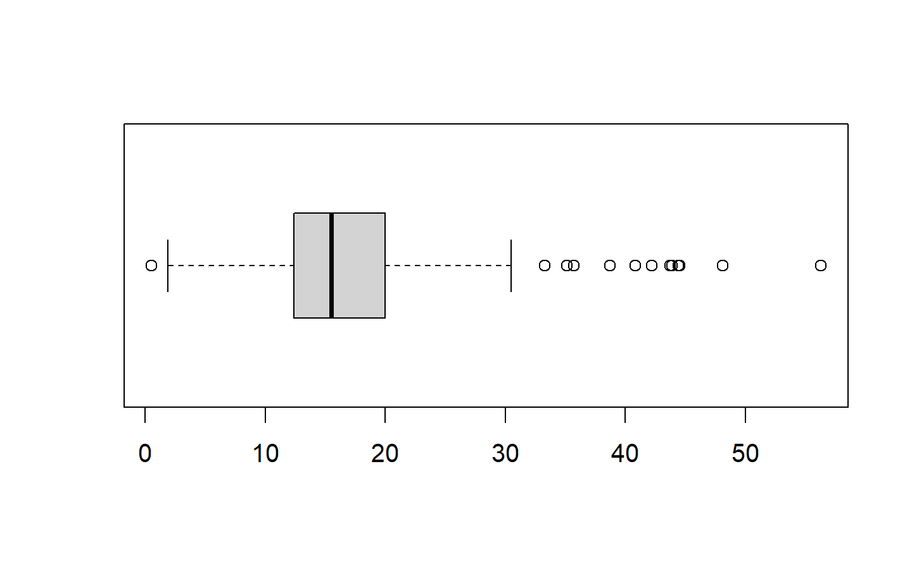
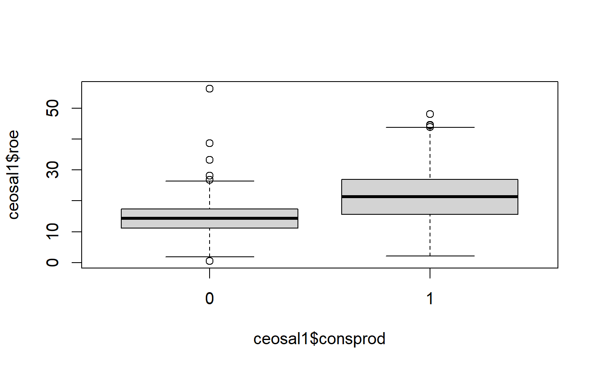
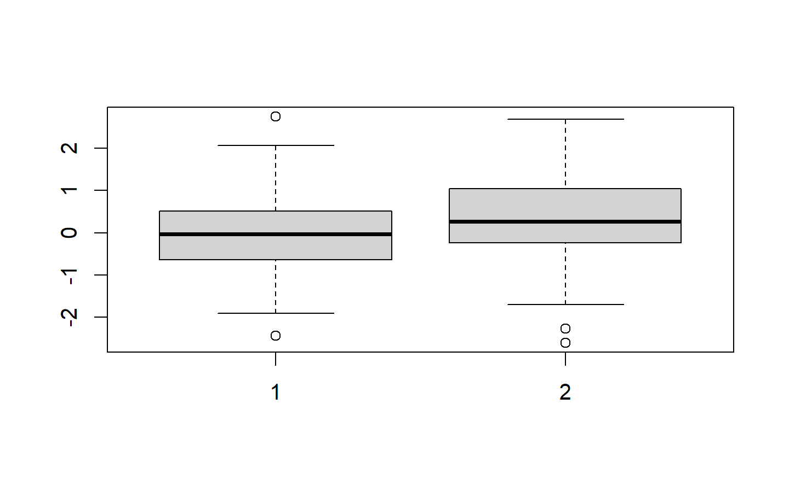
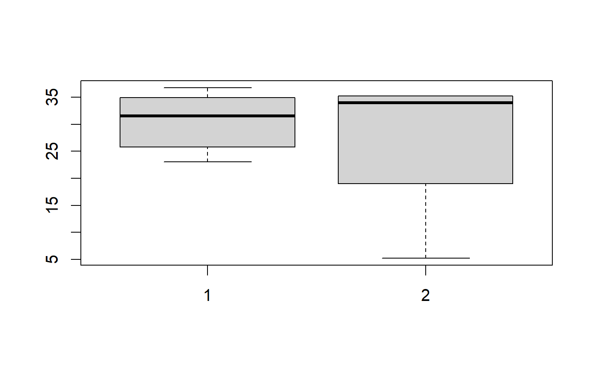

Chapter 7 資料探索
7.1 常用函數
- Mean
- Median
- Quartile
- Percentile
- Range
- Interquartile Range
- Box Plot
- Variance
- Standard Deviation
- Covariance
- Correlation Coefficient
- Central Moment
- Skewness
- Kurtosis
mean(mtcars$mpg)[1] 20.1
median(mtcars$mpg)[1] 19.2
min(mtcars$mpg)[1] 10.4
max(mtcars$mpg)[1] 33.9
quantile(mtcars$mpg) 0% 25% 50% 75% 100%
10.4 15.4 19.2 22.8 33.9
quantile(mtcars$mpg,c(0.2)) 20%
15.2
require(moments)
skewness(mtcars$mpg)[1] 0.64
kurtosis(mtcars$mpg)[1] 2.8
x <- rnorm(100)
quantile(x, probs = c(0, 0.25, 0.5, 0.75, 1)) # quartile
quantile(x, probs = seq(0, 1, by= 0.01)) # decile
ecdf(x)問題：ecdf()的結果和quantile()的結果是否一樣？
##匯入其他格式的資料
安裝package : foreign，以stata 為例(利用其中的函數read.dta())：
if (!file.exists('resources/ceosal1.RData')){
ceosal1<-read.dta("http://fmwww.bc.edu/ec-p/data/wooldridge/ceosal1.dta")
save(ceosal1, file='resources/ceosal1.RData')
}7.2 來自wooldridge 的資料集
load('resources/affairs.RData')
# 原始資料kid是整數，加入標籤成為factor
haskids <- factor(affairs$kids,labels=c("no","yes"))
mlab <- c("very unhappy","unhappy","average","happy", "very happy")
marriage <- factor(affairs$ratemarr, labels=mlab)
# Frequencies for having kids:
table(haskids)haskids
no yes
171 430
# Marriage ratings (share):
prop.table(table(marriage))marriage
very unhappy unhappy average happy very happy
0.0266 0.1098 0.1547 0.3228 0.3860
# Contigency table: counts (display & store in var.)
(countstab <- table(marriage,haskids)) haskids
marriage no yes
very unhappy 3 13
unhappy 8 58
average 24 69
happy 40 154
very happy 96 136
# Share within "marriage" (i.e. within a row):
prop.table(countstab, margin=1) haskids
marriage no yes
very unhappy 0.188 0.812
unhappy 0.121 0.879
average 0.258 0.742
happy 0.206 0.794
very happy 0.414 0.586
# Share within "haskids" (i.e. within a column):
prop.table(countstab, margin=2) haskids
marriage no yes
very unhappy 0.0175 0.0302
unhappy 0.0468 0.1349
average 0.1404 0.1605
happy 0.2339 0.3581
very happy 0.5614 0.3163
如果不知道函數prop.table()
看一下資料結構
str(x<-table(haskids)) 'table' int [1:2(1d)] 171 430
- attr(*, "dimnames")=List of 1
..$ haskids: chr [1:2] "no" "yes"
上面的結構顯示，
- int [1:2(1d)] 171 430 : 整數向量，長度由1到2，是個1維向量。元素1到2的內容分別是171,430。
- 可以由dimnames(x)得到一個list,裡面只有一個元素，這個元素又是一個char list(長度為2)。
因此可以試試看
x/sum(x)haskids
no yes
0.285 0.715
結果應該和prop.table()一樣。
那麼2 way 呢？ 也是先看結構：
str(countstab <- table(marriage,haskids)) 'table' int [1:5, 1:2] 3 8 24 40 96 13 58 69 154 136
- attr(*, "dimnames")=List of 2
..$ marriage: chr [1:5] "very unhappy" "unhappy" "average" "happy" ...
..$ haskids : chr [1:2] "no" "yes"
countstab/rowSums(countstab) haskids
marriage no yes
very unhappy 0.188 0.812
unhappy 0.121 0.879
average 0.258 0.742
happy 0.206 0.794
very happy 0.414 0.586
countstab/colSums(countstab) haskids
marriage no yes
very unhappy 0.0175 0.0302
unhappy 0.0186 0.3392
average 0.1404 0.1605
happy 0.0930 0.9006
very happy 0.5614 0.3163
#??countstab/colsum(countstab)load('resources/ceosal1.RData')
# sample average:
mean(ceosal1$salary)[1] 1281
# sample median:
median(ceosal1$salary)[1] 1039
#standard deviation:
sd(ceosal1$salary)[1] 1372
# summary information:
summary(ceosal1$salary) Min. 1st Qu. Median Mean 3rd Qu. Max.
223 736 1039 1281 1407 14822
# correlation with ROE:
cor(ceosal1$salary, ceosal1$roe)[1] 0.115
boxplot(ceosal1$roe,horizontal = T)
boxplot(ceosal1$roe~ceosal1$consprod)
7.3 t-test
7.3.1 Manually enter raw data from Wooldridge, Table C.3:
SR87<-c(10,1,6,.45,1.25,1.3,1.06,3,8.18,1.67,.98,1,.45,
5.03,8,9,18,.28,7,3.97)
SR88<-c(3,1,5,.5,1.54,1.5,.8,2,.67,1.17,.51,.5,.61,6.7,
4,7,19,.2,5,3.83)7.3.2 Calculate Change (the parentheses just display the results):
(Change <- SR88 - SR87) [1] -7.00 0.00 -1.00 0.05 0.29 0.20 -0.26 -1.00 -7.51 -0.50 -0.47 -0.50
[13] 0.16 1.67 -4.00 -2.00 1.00 -0.08 -2.00 -0.14
7.3.3 Ingredients to CI formula
(avgCh<- mean(Change))[1] -1.15
(n <- length(Change))[1] 20
(sdCh <- sd(Change))[1] 2.4
(se <- sdCh/sqrt(n))[1] 0.537
(c <- qt(.975, n-1))[1] 2.09
7.3.4 Confidence intervall:
c( avgCh - c*se, avgCh + c*se )[1] -2.278 -0.031
驗證
v.n <- length(Change)
v.mean <- sum(Change)/v.n
v.std <-sqrt(sum((Change-v.mean)^2)/(v.n-1))
v.se <- v.std/sqrt(v.n)
rst<-list(v.n,v.mean,v.std,v.se)
rst[[1]]
[1] 20
[[2]]
[1] -1.15
[[3]]
[1] 2.4
[[4]]
[1] 0.537
練習：黑白種，用同一個CV找工作。
load('resources/audit.dta')
head(audit) w b y
1 1 1 0
2 1 1 0
3 1 1 0
4 1 1 0
5 1 1 0
6 0 0 0
y是前兩個欄位相減。以第1筆資料為例，兩個都是1，沒差別(y=0)。
7.3.5 by hand
t statistic for H0: mu=0:
自由度(d.f.)為 n-1 =240 的t分配，其臨界值Critical values(如下):
alpha.one.tailed = c(0.1, 0.05, 0.025, 0.01, 0.005, .001)
CV <- qt(1 - alpha.one.tailed, n-1)
cbind(alpha.one.tailed, CV) alpha.one.tailed CV
[1,] 0.100 1.29
[2,] 0.050 1.65
[3,] 0.025 1.97
[4,] 0.010 2.34
[5,] 0.005 2.60
[6,] 0.001 3.12
7.4 by 函數t.test()
H0: y=5, H1:y>5, 信賴區間0.99 t.test(y, mu=5, alternative=“greater”, conf.level=0.99) 利用函數算：
# ex.C.3: two-sided CI
t.test(audit$y)
# ex.C.5 & C.7: 1-sided test:
t.test(audit$y, alternative="less")One Sample t-test
data: audit$y
t = -4.2768, df = 240, p-value = 2.739e-05
alternative hypothesis: true mean is not equal to 0
95 percent confidence interval:
-0.1939385 -0.0716217 **說明：mu +/- c.level*(se) 見手算例 **
sample estimates:
mean of x
-0.1327801
One Sample t-test
data: audit$y
t = -4.2768, df = 240, p-value = 1.369e-05
alternative hypothesis: true mean is less than 0
95 percent confidence interval:
-Inf -0.08151529
sample estimates:
mean of x
-0.1327801
7.5 分組
目的：分組求統計量 大綱是：先探索一下我們可能用到的R語言技巧，然後是寫成函數。
7.5.1 方法1: 利用 for迴圈
如果不分組
age = c(23.0883, 25.8344, 29.4648, 32.7858, 33.6372,
34.935, 35.2115, 35.2115, 5.2115, 36.7803)
group = c(1, 1, 1, 2, 1, 1, 2, 2, 2, 1)
dframe = data.frame(age=age, group=group)
summary(dframe) age group
Min. : 5.2 Min. :1.0
1st Qu.:26.7 1st Qu.:1.0
Median :33.2 Median :1.0
Mean :29.2 Mean :1.4
3rd Qu.:35.1 3rd Qu.:2.0
Max. :36.8 Max. :2.0
data.frame 的record篩選，可以利用邏輯值索引來篩選分組，這裡的範例都是求得一組(以第一分類為例)：
ft<-factor(dframe$group)
gn<-length(levels(ft)) # nlevels(ft)
gf<-ft==levels(ft)[1] # 第一組
g1<-dframe[gf,]
g1 age group
1 23.1 1
2 25.8 1
3 29.5 1
5 33.6 1
6 34.9 1
10 36.8 1
除了上面的篩選方式以外，也可以利用%in%
ft<-factor(dframe$group)
gn<-length(levels(ft)) # nlevels(ft)
gf<-as.numeric(levels(ft)[1]) # 第一組
g1<-dframe[group %in% gf,] # 不是 gf %in% group
rst<-summary(g1)
rst[4,1][1] "Mean :30.6 "
rst[4,2][1] "Mean :1 "
最後的程式碼：
ft<-factor(dframe$group)
rst <- as.list(numeric(nlevels(ft)))
names(rst)<-levels(ft)
for (gi in levels(ft) ){
gf<-as.numeric(gi)
g1<-dframe[group %in% gf,]
t<-summary(g1)
rst[gi]=t[4,1]
}
print(rst)$`1`
[1] "Mean :30.6 "
$`2`
[1] "Mean :27.1 "
7.5.2 方法2: 函數aggregate()
aggregate(dframe$age, by=list(dframe$group), FUN=mean) Group.1 x
1 1 30.6
2 2 27.1
aggregate(dframe$age, by=list(dframe$group), FUN=mean)[2] x
1 30.6
2 27.1
aggregate()傳回data.frame，轉矩陣利用as.matrix()
練習：
上面的範例是每組求得一個值，如果是多個呢？例如利用aggregate()求得每組min,max,median,q25,q75 ?
7.5.3 方法3: 函數 tapply
f1<-function(im)
{
c(min(im),median(im),mean(im),max(im))
}
rst<-tapply(dframe$age,dframe$group,FUN = f1)#結果是list兩個元素，分別對應f1的計算結果
rstm<-unlist(rst) # unlist 會把rst 變成1維向量
rstm<-matrix(rstm,ncol=2) # hard code2 , try `length(levels(factor(dframe$group)))`
rownames(rstm)<-c("min","median","mean","max")
colnames(rstm)<-paste("組別:",levels(factor(dframe$group)))
rstm 組別: 1 組別: 2
min 23.1 5.21
median 31.6 34.00
mean 30.6 27.11
max 36.8 35.21
7.5.3.1 方法3 利用其他套件
library(dplyr)
dt <- data.frame(age=rchisq(20,10), group=sample(1:2,20, rep=T))
grp <- group_by(dt, group)
summarise(grp, mean=mean(age), sd=sd(age))
detach("package:dplyr", unload=TRUE)7.6 plot
這裡的分組不能用之前的hard code 中提到的方法，因為各組可能數量不同。
v1<-c(1,2,3)
v2<-c(4,4)
cbind(v1,v2)Warning in cbind(v1, v2): number of rows of result is not a multiple of vector
length (arg 2)
v1 v2
[1,] 1 4
[2,] 2 4
[3,] 3 4
rbind(v1,v2) 發生錯誤，是否只能用於data.frame
問題： 如果想要合併兩個向量，同時如果長度不一樣，就短的向量就補NA要怎麼做？練習寫成函數。
v1 v2
[1,] 1 4
[2,] 2 4
[3,] 3 NA
練習:
已經知道boxplot()的參數如果傳進矩陣或資料集，將對每一個欄位作圖
note:boxplot吃 y~x回歸式,例如
boxplot(formula = Ozone ~ Month, # Y ~ X
data = airquality, # 資料
xlab = "Month",
ylab = "Ozone (ppb)",
col ="red")boxplot(matrix(rnorm(100),ncol=2))
現在要分組對年齡boxplot,請寫出程式碼，資料如下：
age = c(23.0883, 25.8344, 29.4648, 32.7858, 33.6372,
34.935, 35.2115, 35.2115, 5.2115, 36.7803)
group = c(1, 1, 1, 2, 1, 1, 2, 2, 2, 1)
dframe = data.frame(age=age, group=group)hint: 每組長度可能不一樣，需要補NA

hint: 最簡單的寫法 boxplot(age~group)
<1> FUN.Name 會跑到mathch.fun() 這個函數，而這個函數是用字串搜尋
m2:
現在想要把rst轉成data.frame。
先看一下示範，如何把list 轉成 data.frame
# 解釋結果,問stringsAsFactors=F 有什麼效果？
test1 <- list( c(a='a',b='b',c='c'),
c(a='d',b='e',c='f'))
d1<-as.data.frame(test1)
d1 c.a....a...b....b...c....c.. c.a....d...b....e...c....f..
a a d
b b e
c c f
# ok
test2 <- list(a = c(1, 2, 3), b = c(4, 5, 6))
d2<-as.data.frame(test2)
d2 a b
1 1 4
2 2 5
3 3 6